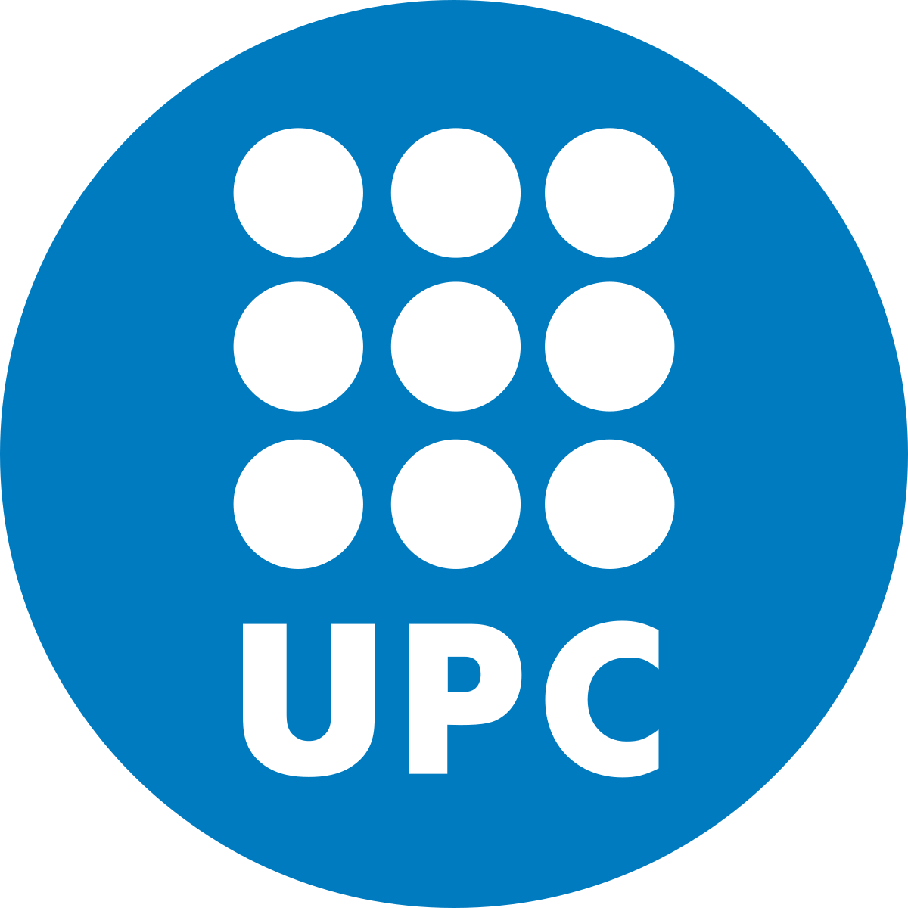

Hello, I'm
Antonio Lobo Santos
Research Engineer|
Generative AI • Large Language Models • Reinforcement Learning • ML Systems
Oxford, UK
Research & Engineering Focus
Generative AI & LLMs
Building empirical evaluation frameworks, stress-testing model reasoning capabilities, and orchestrating robust data pipelines for foundation models.
Reinforcement Learning
Designing and implementing RL algorithms for LLM training — from reward modelling and PPO to robust training environments for agentic systems.
Post-Training & Fine-Tuning
Production-grade post-training pipelines: supervised fine-tuning, preference learning, and systematic evaluation of model behaviour at scale.
Multi-Agent Systems
Designing autonomous multi-agent coordination protocols, robust collective decision-making, and scalable architectures for agent simulations.
Social Robotics
Integrating AI capabilities into robotic systems, with a special focus on socially assistive robotics designed to improve human life and support therapeutic outcomes.
Professional Profile
Research engineer with hands-on experience in generative AI, reinforcement learning for LLMs, and scalable evaluation pipelines. I build rigorous tools to assess, train, and improve foundational models — from stress-testing advanced reasoning under edge-case conditions to designing RLHF-style training loops and reward modelling systems.
At CSIC-IIIA I evaluated the reasoning capabilities of LLMs and integrated them into real-time robotic-assisted systems, building end-to-end evaluation infrastructure for model behaviour and robustness analysis. This work deepened my expertise in developing AI systems that are reliable, performant, and production-ready.
I am currently a Visiting Student at the University of Oxford, researching robust coordination in multi-agent systems with a focus on scalable design. My earlier backend engineering experience designing event-driven microservices for distributed production systems equips me with the infrastructure skills to build robust ML training and inference pipelines.
Core Skills
Technologies
Languages
Research & Engineering Experience
Visiting Student
University of Oxford
Working with Michael Wooldridge on robust methods for multi-agent systems, with a focus on scalable MAS design, coordination under uncertainty, and rigorous collective decision-making. Investigating control mechanisms and simulation strategies for multi-agent interaction in complex strategic settings.
Research Engineer
CSIC – IIIA
Continued research on evaluating the advanced reasoning capabilities of large language models, building empirical evaluation pipelines for robust model assessment. Integrated LLMs for real-time interaction in robotic-assisted systems, contributing to model behaviour analysis, evaluation design, and prompt engineering for complex interactive settings.
Lecturer in Probabilistic Graphical Models
University Pompeu Fabra
Designed and delivered lectures on probabilistic graphical models for AI, covering theoretical foundations and practical applications, with emphasis on efficient Bayesian inference in structured probabilistic models.
Research Intern
CSIC – IIIA
Researched methodologies for evaluating reasoning and generative capabilities of large language models, building end-to-end evaluation pipelines. Designed stress-testing experiments, structured evaluation datasets, and analysed behavioural failure modes in edge-case and complex reasoning scenarios.
Undergraduate Researcher
University of Seville
Investigated LLMs, LangChain, RAG agents, and vector databases as an undergraduate researcher in the Department of Computer Science and Artificial Intelligence. Gained hands-on experience with model evaluation, prompt engineering, and agentic LLM architectures while attending research seminars on frontier AI techniques.
Backend Developer
Axión
Designed and maintained event-driven microservices for high-volume data processing systems in production. Improved reliability and performance of distributed pipelines, managed ETL workflows with Apache NiFi, and implemented CI/CD pipelines with GitLab for containerised services deployed on Kubernetes — building the solid infrastructure engineering foundation needed for scalable ML systems.
Education & Training

M.Sc. in Artificial Intelligence
UPC–UB–URV
Honours in Machine Learning, Deep Learning, Reinforcement Learning, and Complex Networks. Specialising in Generative AI, RL for LLMs, and scalable post-training methods.
B.Sc. in Mathematics
University of Seville
Strong training in probability theory, statistics, optimisation, mathematical modelling, and rigorous analysis. Developed a deep theoretical foundation for advanced machine learning and data science.
B.Sc. in Computer Engineering
University of Seville
Graduated with 9 honour distinctions, including Algorithms and Complexity, Computer Architecture, Computer Networks, and Intelligent Systems.
Bachelor's Thesis: Large Language Models and Knowledge Graphs to Model Mathematical Knowledge
Developed and evaluated an LLM-based pipeline for extracting mathematical knowledge from LaTeX into a structured knowledge graph.
Read ThesisCertifications
Invited Talks
Invited Speaker: LLM-Tools for Coding
La Moncloa (Spanish Government)
Delivered an invited seminar at La Moncloa on the effective and proper use of LLM tools for coding. Focused on best practices, capabilities, and safety considerations when integrating AI assistants into proper software engineering workflows.
Seminar: LLM-Tools for Coding
CSIC – IIIA
Conducted a technical seminar for researchers at the Artificial Intelligence Research
Institute (IIIA) demonstrating advanced usage of LLM tools for coding, emphasizing
prompting strategies, agentic workflows, and safe implementation practices.
View Seminar Details
Academic Publications
EMY: Supporting Autism Therapy with a Socially Assistive Robot
HRI '26: 21st ACM/IEEE International Conference on Human-Robot Interaction
Presented at HRI '26. Explores the application of socially assistive robots in autism therapy, detailing the technical integration and therapeutic utility of the EMY robotic system.
View ArticleEnhancing Mathematical Knowledge Graphs with Large Language Models
Modelling, 2025
Derived from my bachelor’s thesis research. Built and evaluated an LLM-based information extraction pipeline for converting mathematical content in LaTeX into a queryable knowledge graph.
View ArticleBuilding the "mapamático" (map-matic)
Epsilon Journal of Mathematics Education, Number 114
This article presents the construction, evolution, and operation of a website hosting the "mapamático", an interactive map of streets named after mathematicians in a city. It discusses the challenges encountered during its development and showcases its content for the province of Seville, the authors' birthplace. A final proposal, aimed at anyone interested, is also presented.
View PDFInfinity: Some Curiosities and its Teaching in High School
Números Journal, Volume 113
This article discusses the difficulties that a secondary and high school mathematics teacher may encounter when introducing the concept of infinity to their students. The main objective is to present possible ways to start explanations about this concept, emphasizing from the outset the idea that it is not a number, but a concept, as well as the drawbacks that can arise when treating it as a number. It also discusses its origin and some curiosities about it, which can help teachers motivate their students and spark their interest in its study.
View ArticleSelected Projects
B.Sc. Thesis Research — Mathematical Knowledge Graphs with LLMs
- Built an LLM-assisted pipeline to extract structured mathematical knowledge from LaTeX documents
- Evaluated knowledge graph construction and querying workflow
- Resulted in a 2025 journal publication
Consensus Through Debate
Implemented and evaluated a scalable methodology where multiple LLM agents debate candidate solutions and iteratively critique each other to reach a higher-quality consensus.
View DemoAB Data Challenge – Finalist
Developed a transformer-based time-series model for anomalous water-consumption detection, training the system from scratch and contributing to data preparation, modelling, and evaluation for a real-world utility use case.
EcoRobotics (Erasmus+)
Participated in an Erasmus+ project in Krakow focused on sustainable robotics. Collaborated to modify a robotic assistant named "Españita," integrating AI capabilities through the OpenAI API while managing technical and electrical design intricacies.
Read ArticleApp Inventor Against Cyberbullying (Age 16)
Developed a mobile application to raise community awareness of cyberbullying through interactive conversational scenarios and questionnaires. The app was recognized as "App of the Month" by MIT App Inventor.
Read ArticleSmarthuerto (Age 16)
Co-developed an award-winning smart agriculture app that won the first edition of the EC2CE Grow-Lab contest. The project was subsequently featured as an "App of the Month" on the MIT App Inventor blog.
Read Article